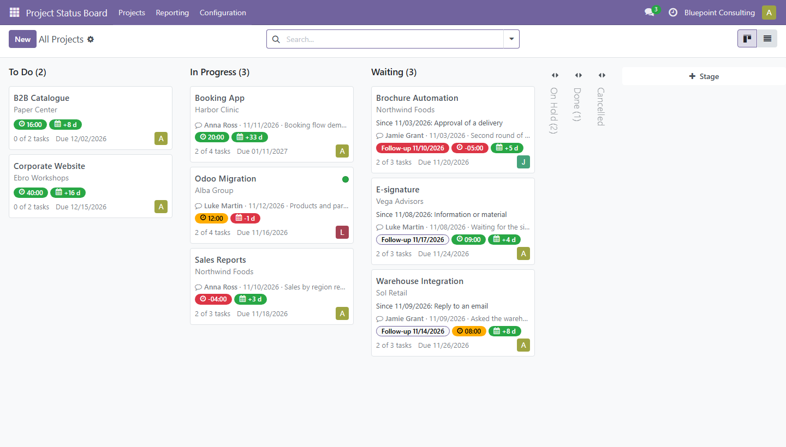
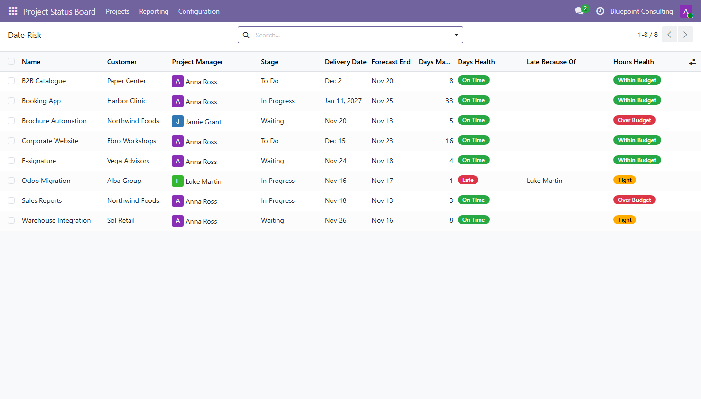
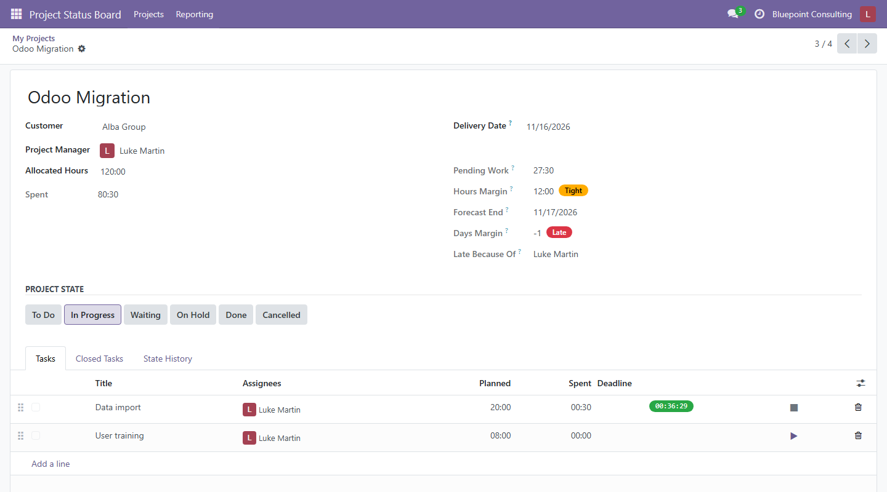
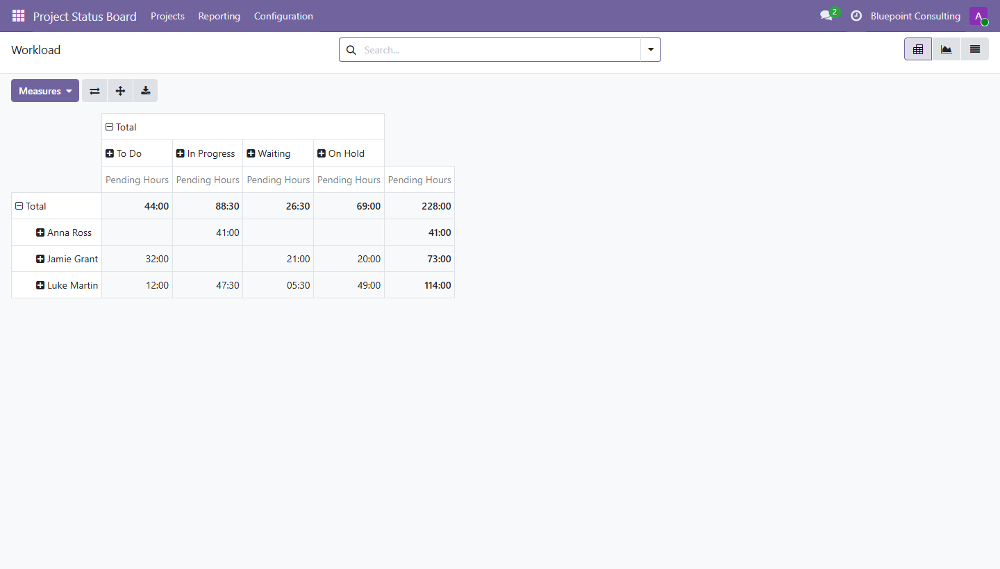
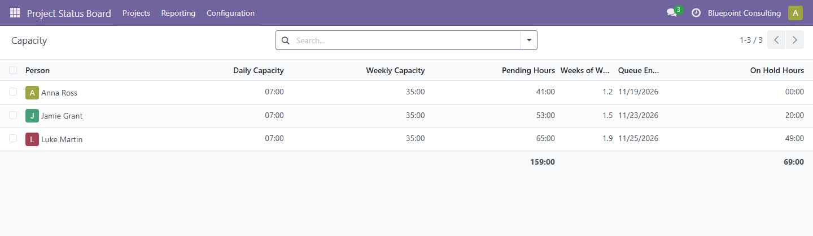
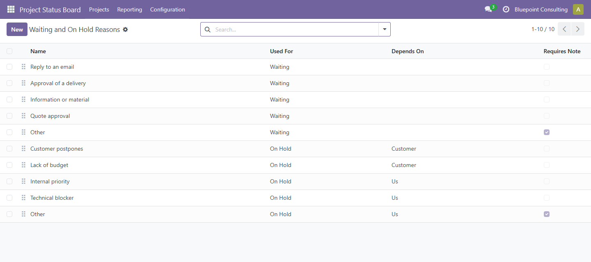

Project's stages tell you where a project is, not why it is stuck nor whether it will arrive. Project Status Board turns them into a board of states, asks why the moment a project stops, and shows on every card whether its hours and its delivery date will hold.

A project that stops is either Waiting (something close, to be chased) or On Hold (a long, agreed pause). Each one asks for a reason from a short list, not a free-text excuse.
Allocated hours left minus the work still planned on the open tasks. A red clock warns that the project will go over budget before it does.
Each person works through their tasks by due date at their real capacity. A red calendar says the project will be late, and who it waits for.


Workload splits the pending hours by person, project state and due date. Capacity shows how many weeks of work each person has and the day their queue ends, with on-hold work apart. Each person sees their own figures; Project administrators see everybody's.


Ten reasons come out of the box, from Reply to an email to Lack of budget. Rename them, add your own, reorder them. On Hold reasons propose who the project depends on, and catch-all reasons such as Other require a note.

The columns are Project's own stages, the to-do list is Project's own tasks and the timer logs standard timesheet lines. Nothing is copied into a parallel model, and the Project app keeps working exactly as before. No dependency on Enterprise modules, and no data is sent outside your database.
Questions and bug reports: support@cimalor.com. We aim to reply within 48 to 72 business hours. You can also open an issue at github.com/cimalor-apps/addons, but the reply time above applies to email only.
Project Status Board is free software under the LGPL-3 license. Made by Cimalor.